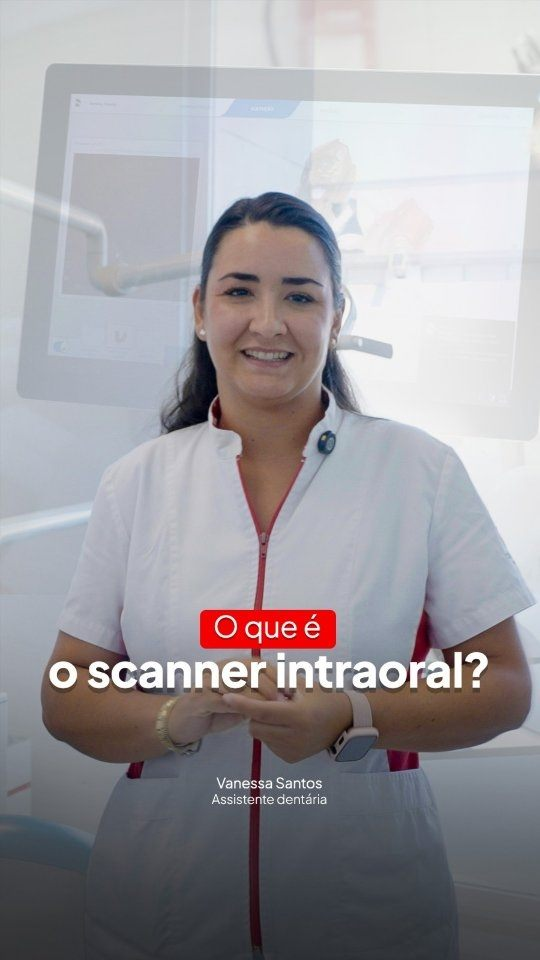
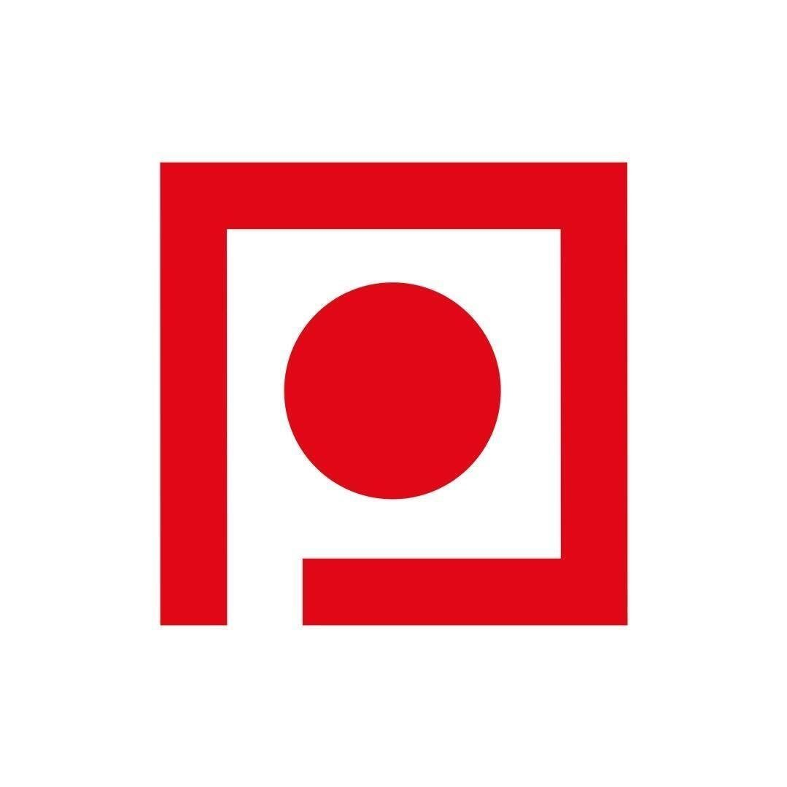
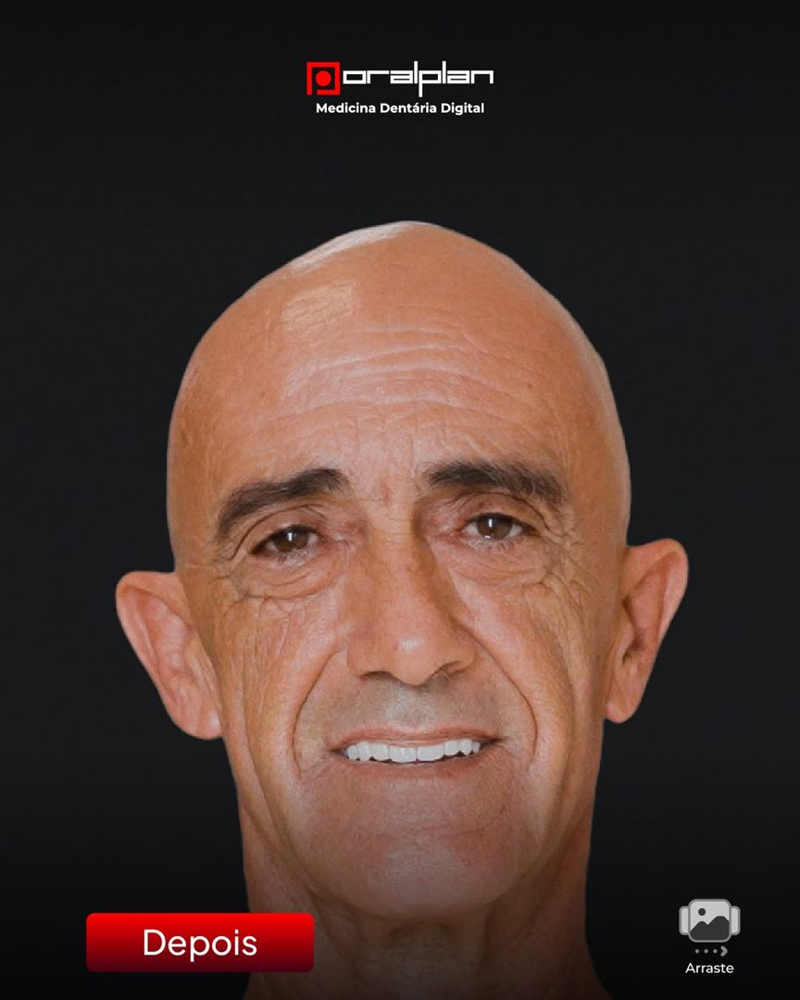

Prótese fixa sobre implantes, com referência em cirurgia oral.
Resposta pelo WhatsApp da clínica

Voltar a sorrir e a mastigar com confiança.
Veja os seus dentes no ecrã.
Avaliação e plano para cada caso.
O scanner intraoral cria um modelo digital dos seus dentes, e a equipa de laboratório desenha a prótese a partir dele.